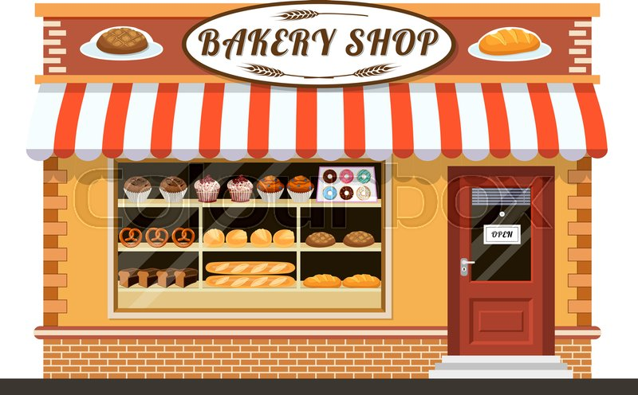

Our Story
The Cupcake Bakery has been a tradition in Orange County since 1956 and as French’s Cupcake Bakery since 1976. It is family owned and operated, and founded by Jerry and Dianne French. All of our baked goods are made on the premises using time-honored recipes by our skilled staff. Always fresh, always ready and always delicious. The French family baking tradition dates back to 1929 in Hicksville, Ohio, where Jerry French’s great uncle opened a bakery. For nine years, Jerry’s grandfather, Ralph Seely, worked there perfecting his skills and opened his own bakery in 1938. In 1956, the family and business relocated to Santa Ana, CA.

Overtime, three new bakeries where opened in Orange County, with Jerry and Dianne French opening Frenchs Cupcake Bakery in 1976. Today, that family tradition lives on as French’s Cupcake Bakery, creating fresh baked goods every day using only the finest ingredients with no preservatives. French’s Cupcake Bakery has received numerous awards and many excellent reviews throughout it’s 40 years at this location. We are very proud to say that the Orange County Register’s Readers Poll has, for sixteen years in a row, voted French’s Cupcake Bakery Orange County’s Best Bakery! Frenchs Cupcake Bakery is a full line bakery and we produce numerous other delicious products daily, like our custom novelty cakes for birthdays, baby showers or anniversaries. We do a fantastic assortment of cupcakes, fancy cakes, decorated cookies, and French pastries, and we bake over 20 different flavors of danish, coffeecakes and muffins.